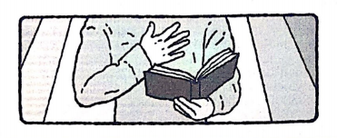

Usomaji wa biblia Yeremia 20

SABATO MCHANA
Somo La Juma hili: Zab. 119:1-16, Zaburi 90, Yn. 3:16, Zab. 95:7-11, Zaburi 141, Zaburi 128.
Fungu La Kukariri
"Basi, utujulishe kuzihesabu siku zetu, Tujipatie moyo wa hekima" Zaburi 90:12.
Kama tulivyoona, neema ya Mungu inatoa kwa ajili ya msamaha wa dhambi, na inaumba moyo mpya ndani ya mwenye dhambi anayetubu, ambaye sasa anaishi kwa imani.
Neno la Mungu pia linatoa maelekezo kwa ajili ya kuishi maisha ya haki (Zab. 119:9-16). Kushika sheria ya Mungu si ushupavu wa sheria kabisa bali ni maisha katika uhusiano wa karibu na Mungu, maisha yaliyojaa baraka (Zab. 119:1, 2; Zaburi 128).
Hata hivyo, maisha ya mtu mwenye haki hayakosi majaribu. Wakati fulani mwenye haki anaweza kujaribiwa na asili yenye hila ya dhambi (Zab. 141:2-4) na hata kuanguka katika jaribu hilo. Mungu huruhusu nyakati za kujaribiwa kuruhusu uaminifu wa watoto Wake (au kutokuwa waaminifu) kudhihirishwa wazi. Ikiwa watoto wa Mungu watatii maagizo na maonyo ya Mungu, imani yao itatakaswa na tumaini lao kwa Bwana litafanywa imara. Hekima kwa ajili ya kuishi maisha ya haki inapatikana kupitia mabadiliko ya maisha pamoja na Mungu katikati ya majaribu na changamoto. Hivyo, ombi kwamba Mungu atufundishe kuhesabu siku zetu ili tujipatie moyo wa hekima (Zab. 90:12), linaakisi ahadi endelevu ya kutembea katika uaminifu kwa Bwana.